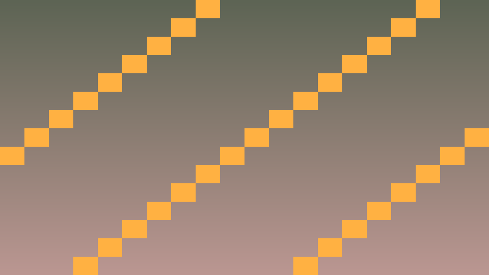
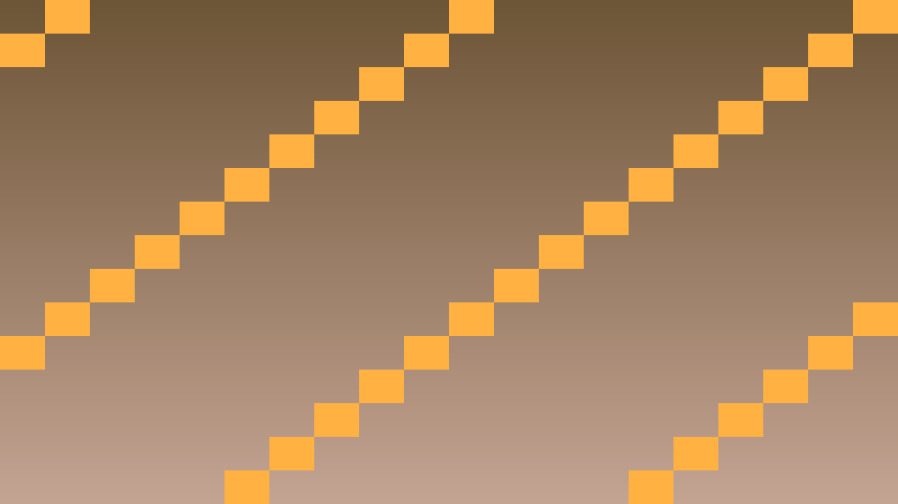
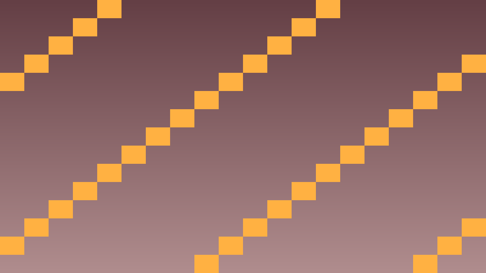

6.1 UI (lietotāja saskarne) element (elementi) un Control (saskarnes vadīkla) nodes (mezgli)
Stundas uzdevums: Izveidot user interface (lietotāja saskarni) ar Godot Control (saskarnes vadīkla) nodes (mezgli) - Button (poga), Label (teksta etiķete), Container (konteiners).
80 min plāns: Teorija un paraugs (~10 min) · 1. uzdevums (~20 min) - uzbūvē main menu (sākuma izvēlni) · 2. uzdevums (~25 min) - savieno button (pogas) ar code (kodu) · 3. uzdevums (~20 min) - pievieno anchor (enkurus) un pārbaudi izmērus · Iesniegšana (~5 min).
Pirms sāc: atver savu project (projektu). UI (lietotāja saskarne) Godot lieto Control (saskarnes vadīkla) mezglus, nevis Node2D (2D mezgls) - tiem ir anchor (enkuri) un container (konteineri), kas paši kārto element (elementus).
Teorija: Control (saskarnes vadīkla) nodes (mezgli) hierarchy (hierarhija)
Godot UI (lietotāja saskarne) system (sistēma) izmanto Control (saskarnes vadīkla) nodes (mezgli), kas atšķiras no Node2D (2D mezgls) - tām ir layout (izkārtojums), anchors (enkuri), theme (noformējuma tēma).
| Node (mezgls) | Lietojums |
|---|---|
Label (teksta etiķete) | Teksts (static (statisks)) |
Button (poga) | Klikšķināmā button (poga) |
LineEdit (vienas rindas teksta ievade) | Single-line input (vienas rindas ievade) |
TextEdit (vairāku rindu teksta ievade) | Multi-line input (vairāku rindu ievade) |
VBoxContainer (vertikāls konteiners) | Vertikāls layout (izvietojums) |
HBoxContainer (horizontāls konteiners) | Horizontāls layout (izvietojums) |
GridContainer (režģa konteiners) | Grid layout (režģa izkārtojums) |
PanelContainer (paneļa konteiners) | Background (fons) ar border (apmalēm) |
// Button signal
Button button = GetNode<Button>("StartButton");
button.Pressed += OnStartPressed;
private void OnStartPressed()
{
GetTree().ChangeSceneToFile("res://game.tscn");
}Kā šo izmantot project (projektā)
Atceries: ar redzamu efektu editor (redaktorā) nepietiek. Paskaidro, kura C# class (klase) glabā state (stāvokli), kura method (metode) to maina un kā Godot node (mezgls) structure (struktūra) izmanto šo code (kodu).
Pārbaudi: UI (lietotāja saskarne) signal (signāli), audio (skaņa) darbības, debug (atkļūdošana) output (izvade) un publishing (publicēšanas) template (sagatave) ir sasaistīta ar C# game state (spēles stāvokli).
public class PolishCheckpoint
{
public string Lesson = "6.1 UI elementi un Control nodes";
public bool UsesCSharp = true;
public bool ConnectsUiSignals = true;
public bool RoutesAudioEvents = true;
public bool VerifiesExportBuild = true;
}Praktiskie uzdevumi
1. uzdevums -
Uzbūvē main menu (sākuma izvēlni)
Beigās tavai spēlei būs sākuma screen (ekrāns) ar trim button (pogām).
- Izveido jaunu scene (scēnu) ar
Control(saskarnes vadīkla) root (sakni) un nosaukumuMenu. - Pievieno tai child node (bērnu)
VBoxContainer(vertikāls konteiners). - Pievieno container (konteinerā)
Label(teksta etiķete) ar spēles nosaukumu. - Pievieno trīs
Button(poga) mezglus: Sākt, Settings (iestatījumi), Iziet. - Ievēro, ka container (konteiners) pats sakārto button (pogas) vienu zem otras.
- Pievieno container (konteinerā) atstarpi ar
Theme Overrides -> Separation. - Palaid scene (scēnu) un pārbaudi, ka visas button (pogas) ir redzamas.
Gatavs, kad: screen (ekrānā) ir virsraksts un trīs button (pogas) vienu zem otras ar vienādām atstarpēm.
2. uzdevums -
Savieno button (pogas) ar code (kodu)
Beigās button (pogas) tiešām kaut ko darīs.
- Izveido C# class (klasi)
MainMenu, kas manto noControl(saskarnes vadīkla). - Pievieno method (metodi)
private void OnStartPressed(). - Paņem button (pogu) ar
Button startButton = GetNode<Button>("VBox/StartButton");. - Savieno
_Readymethod (metodē) button (pogas) signal (signālu) arstartButton.Pressed += OnStartPressed;. - Ielādē handler (apstrādātājā) spēles scene (scēnu) ar
GetTree().ChangeSceneToFile("res://game.tscn");. - Savieno arī Iziet button (pogu) ar
GetTree().Quit();. - Būvē un pārbaudi abas button (pogas).
Gatavs, kad: Sākt button (poga) atver spēles scene (scēnu), un Iziet button (poga) aizver spēli.
3. uzdevums -
Pievieno anchor (enkurus) un pārbaudi izmērus
Beigās menu (izvēlne) izskatīsies pareizi jebkurā window (loga) izmērā.
- Izvēlies
VBoxContainer(vertikāls konteiners) un atver Layout (izkārtojums) -> Anchors Preset (enkuru sagatave). - Izvēlies Center (centrā), lai container (konteiners) paliktu screen (ekrāna) vidū.
- Palaid spēli un mainiet window (loga) izmēru ar mouse (peli).
- Pieraksti, vai menu (izvēlne) palika centrā.
- Nomaini anchor (enkuru) uz Top Left (augšā pa kreisi) un atkārto test (testu).
- Pieraksti, kas mainījās.
- Ieliec Center (centrā) atpakaļ un saglabā scene (scēnu).
Gatavs, kad: mainot window (loga) izmēru, menu (izvēlne) paliek centrā, bet ar Top Left (augšā pa kreisi) anchor (enkuru) tā aizbēg uz stūri.
Papildu uzdevums - Pievieno settings (iestatījumu) window (logu)
Ja pamatdarbs ir gatavs, uztaisi otro screen (ekrānu).
- Izveido
PanelContainer(paneļa konteiners) ar nosaukumuSettings. - Pievieno tam skaļuma slider (slīdni)
HSlider(horizontāls slīdnis). - Paslēp to sākumā ar
settings.Visible = false;. - Parādi to, nospiežot Settings (iestatījumu) button (pogu).
- Pievieno Atpakaļ button (pogu), kas to atkal paslēpj.
Gatavs, kad: Settings (iestatījumu) window (logs) parādās un pazūd ar button (pogām), neizejot no menu (izvēlnes).
Ko sagatavo
Stundas mērķis: Tavai spēlei ir main menu (sākuma izvēlne) ar trim button (pogām) Control (saskarnes vadīkla) node (mezglos), button (pogas) ir savienotas ar C# code (kodu) caur signal (signāliem), un menu (izvēlne) paliek centrā, mainot window (loga) izmēru.
GitHub repository (krātuvē) jābūt:
- File (fails)
MainMenu.csar button (pogu) signal (signālu) savienojumiem. - README.md ievietota video link (saite) vai divi screenshot (ekrānuzņēmumi) repository (krātuvē): menu (izvēlne) un tas, kas notiek, nospiežot Sākt.
- Screenshot (ekrānuzņēmums) ar menu (izvēlni) pēc window (loga) izmēra maiņas.
- README.md: ar ko
Control(saskarnes vadīkla) node (mezgli) atšķiras noNode2D(2D mezgls).
Kā iesniedz: Veic commit (izmaiņu fiksējums) un push (nosūtīšana uz attālo krātuvi). Skolotāja norādītajā vietā ievieto tikai GitHub repository (krātuves) link (saiti); visiem prasītajiem file (failiem), README.md pierakstiem un pierādījumiem jābūt pašā repository (krātuvē).
Biežākās kļūdas
- Button (poga) signal (signāls) nestrādā: Pārbaudi, vai
Pressed +=izsaukums notiek_Readymethod (metodē) un node (mezgla) path (ceļš) ir pareizs. - UI (lietotāja saskarne) element (elementi) pārklājas: Lieto Container (konteiners) nodes (mezgli) layout management (izkārtojuma pārvaldība).
- Anchors (enkuri) confusing: Layout (izkārtojums) → Set Anchors and Offsets to Preset (iestatīt enkurus un nobīdes pēc sagataves) → Top Wide (augšā visā platumā) vai Center (centrā).
Godot screenshot (ekrānuzņēmumi)



Code sample (koda piemērs) (paplašināts)
using Godot;
public partial class Menu : Control
{
public override void _Ready()
{
Button startBtn = GetNode<Button>("VBox/StartButton");
Button settingsBtn = GetNode<Button>("VBox/SettingsButton");
Button quitBtn = GetNode<Button>("VBox/QuitButton");
startBtn.Pressed += OnStart;
settingsBtn.Pressed += OnSettings;
quitBtn.Pressed += OnQuit;
}
private void OnStart()
{
GetTree().ChangeSceneToFile("res://game.tscn");
}
private void OnSettings()
{
GetTree().ChangeSceneToFile("res://settings.tscn");
}
private void OnQuit()
{
GetTree().Quit();
}
}